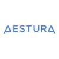

LEMONDERMA 레몬더마
@lemonderma_official
16.7K
팔로워
7
팔로잉
61
게시글
누가(Who)레몬더마 브랜드 — 비건·클린 뷰티를 원하지만 효능 약함에 실망한 30대 전후 민감성 피부 여성을 위한 K-Pharmacy 더마코스메틱
어디서(Where)레몬더마 인스타그램 채널에서
소재(What)Lemonshot 150 Exo Booster Serum · Exo Booster Cream | 스킨케어 — Jeju Lemon Exosome 성분 교육 + Vegan Microcrystal 작동감 before/after
시기(When)매일 1개
방식(How)성분 교육 카드뉴스 + 텍스처 클로즈업 릴스 + Creator 협업 before/after + K-Pharmacy 권위 콘텐츠
목적(Why)브랜드 인지도 빌드 + 엑소좀 K-더마 포지셔닝 확립 → 팔로워 기반 구매 전환
❤️ 0💬 1

rhode
@rhode
5.3M
팔로워
508
팔로잉
1.6K
게시글
글레이징크림베이지미니멀글로우펩타이드
누가(Who)rhode 브랜드 — Hailey Bieber의 글로시·글로우 루틴을 원하는 18~30대 글로벌 여성
어디서(Where)rhode 인스타그램 채널에서
소재(What)펩타이드 글로우 세럼 · 펩타이드 립 트리트먼트 | 스킨케어·립케어 — Hailey 글로시 루틴 + 팝업·한정 컬러 소식
시기(When)하루 약 1.6개
방식(How)창업자 일상 릴스 + GRWM 숏폼 + 팝업 비하인드 영상
목적(Why)D2C 구매 전환 + 팝업·이벤트 동원 + 창업자 팬덤 유지
❤️ 269.9K💬 951

La Roche-Posay
@larocheposay
4.7M
팔로워
274
팔로잉
470
게시글
피부과추천SPF민감성피부CicaplastAnthelios
누가(Who)La Roche-Posay 브랜드 — 피부과 의사 추천 더마코스메틱을 찾는 전 세계 민감성·문제성 피부 보유자
어디서(Where)La Roche-Posay 글로벌 인스타그램 채널에서
소재(What)Anthelios 자외선 차단제 · Cicaplast Baume B5 | 더마코스메틱·선케어 — 피부과 의사 협업 교육 + 글로벌 캠페인
시기(When)약 4일에 1개
방식(How)피부과 전문의 콜라보 릴스 + 미신 타파 에듀케이션 콘텐츠 + 글로벌 캠페인
목적(Why)글로벌 피부과 의사 추천 No.1 포지셔닝 강화 + Sephora·약국 채널 구매 전환
❤️ 2.5K💬 103

Drunk Elephant
@drunkelephant
1.9M
팔로워
153
팔로잉
215
게시글
클린뷰티형광패키징프리미엄Sephora성분철학
누가(Who)Drunk Elephant 브랜드 — 6가지 의심 성분 배제·펩타이드 기반 글로우 루틴을 원하는 미국 프리미엄 여성
어디서(Where)Drunk Elephant 인스타그램 채널에서
소재(What)T.L.C. Framboos Glycolic Night Serum · C-Firma Fresh Day Serum | 스킨케어 — Suspicious 6 배제 철학 + 컬러풀 라인업 루틴 믹싱
시기(When)매일 1개
방식(How)컬러풀 제품 플랫레이 이미지 + 루틴 믹싱 릴스 + UGC 리포스트
목적(Why)프리미엄 클린 뷰티 포지셔닝 유지 + Sephora·D2C 구매 전환
❤️ 516💬 26

medicube
@medicube_global_official
1.8M
팔로워
2.3K
팔로잉
1.1K
게시글
글로우여름달콤함바닐라테크뷰티
누가(Who)medicube 브랜드 — AGE-R 디바이스+세럼 루틴으로 홈케어 피부과를 찾는 20~35세 여성
어디서(Where)medicube 인스타그램 채널에서
소재(What)AGE-R 부스터 세럼 · AGE-R 어플리케이터 디바이스 | 스킨케어·뷰티디바이스 — 디바이스+세럼 조합 루틴 before/after
시기(When)하루 약 1.4개
방식(How)디바이스 사용법 릴스 + 루틴 튜토리얼 + 사용자 before/after UGC
목적(Why)디바이스+세럼 번들 구매 전환 + 글로벌 팬덤 확장
❤️ 2.3K💬 76

Beauty of Joseon
@beautyofjoseon_official
1.4M
팔로워
161
팔로잉
1.5K
게시글
한방전통미학궁중쌀선케어
누가(Who)Beauty of Joseon 브랜드 — 한방 성분 기반 K-헤리티지 스킨케어를 원하는 글로벌 여성
어디서(Where)Beauty of Joseon 인스타그램 채널에서
소재(What)글로우 선 스틱 · 리바이탈라이징 세럼 (쌀+프로폴리스) | 스킨케어 — 한방 성분 헤리티지 스토리 + 글로벌 인플루언서 after
시기(When)약 2일에 1개
방식(How)한방 감성 이미지 피드 + 글로벌 인플루언서 콜라보 릴스 + 성분 교육 카드
목적(Why)K-헤리티지 포지셔닝 강화 + 아마존·세포라 글로벌 구매 전환
❤️ 1.5K💬 45

Typology Paris
@typologyparis
1.1M
팔로워
1
팔로잉
2.2K
게시글
미니멀투명성파리지앵클린뷰티여름햇살
누가(Who)Typology Paris 브랜드 — 미니멀 성분주의·클린 뷰티를 추구하는 프랑스 코어 + 글로벌 여성
어디서(Where)Typology Paris 인스타그램 채널에서
소재(What)니아신아마이드 세럼 · 미니멀 클렌저 | 스킨케어 — 단일 성분 포커스 교육 + 미니멀 포뮬러 스토리
시기(When)매일 1개
방식(How)화이트 배경 미니멀 이미지 피드 + 성분 인포그래픽 카드
목적(Why)클린 뷰티 브랜드 권위 확립 + 프랑스→글로벌 확장
❤️ 283💬 8

COSRX
@cosrx
799.8K
팔로워
239
팔로잉
1.9K
게시글
달팽이뮤신검증성분베스트셀러SephoraAmazon
누가(Who)COSRX 브랜드 — 달팽이 점액·BHA 기반 트러블케어를 원하는 글로벌 피부 고민 여성
어디서(Where)COSRX 인스타그램 채널에서
소재(What)어드밴스드 달팽이 96 뮤신 에센스 · AHA/BHA 클래리파이 토너 | 스킨케어 — 달팽이 점액·BHA 트러블케어 루틴 + 인플루언서 사용기
시기(When)약 2일에 1개
방식(How)성분 교육 카드뉴스 + 트러블 before/after 릴스 + 인플루언서 사용기
목적(Why)트러블케어 카테고리 1위 포지셔닝 유지 + 아마존·세포라 전환
❤️ 2.2K💬 140

VT Cosmetics
@vtcosmetics_official
759.7K
팔로워
13
팔로잉
227
게시글
무중력청량함글로벌트렌디K-뷰티
누가(Who)VT Cosmetics 브랜드 — 리들샷 스피큘+세럼 루틴으로 글로벌 K-뷰티 팬을 타겟
어디서(Where)VT Cosmetics 인스타그램 채널에서
소재(What)리들샷 100·300 앰플 · 시카 크림 | 스킨케어 — 리들샷 사용법 + BTS·셀럽 협업 콘텐츠
시기(When)매일 1개
방식(How)셀럽 협업 이미지/영상 + 제품 before/after 릴스
목적(Why)셀럽 팬덤 기반 구매 전환 + 글로벌 인지도
❤️ 1.0K💬 40

ANUA
@anua_global
721.1K
팔로워
10
팔로잉
309
게시글
어성초진정클린자연주의수분
누가(Who)ANUA 브랜드 — 쑥·어성초 성분의 자연 유래 진정 스킨케어를 원하는 글로벌 20~30대 여성
어디서(Where)ANUA 인스타그램 채널에서
소재(What)어성초 77 토너패드 · 세럼 | 스킨케어 — 어성초·쑥 성분 진정 루틴 + 글로벌 인플루언서 협업
시기(When)매일 1개
방식(How)성분 텍스처 릴스 + 인플루언서 before/after + 제품 라인업 소개 카드
목적(Why)글로벌 K-뷰티 인지도 급확장 + 아마존·세포라 구매 전환
❤️ 3.1K💬 122

celimax
@celimax.global
531.6K
팔로워
32
팔로잉
101
게시글
클리니컬레티날과학적신뢰모공케어
누가(Who)celimax 브랜드 — 노니 성분 기반 브라이트닝·보습을 원하는 글로벌 20~30대 여성
어디서(Where)celimax 인스타그램 채널에서
소재(What)The Real Noni Energy Ampoule | 스킨케어 — 노니 성분 에너지 공급 효능 + 글로벌 루틴 콘텐츠
시기(When)약 5일에 1개
방식(How)짧은 제품 시연 릴스 + 성분 카드뉴스 + 라이프스타일 이미지
목적(Why)글로벌 인지도 확대 + 팔로워 증가 + D2C 유입
❤️ 3.0K💬 132

Dr.Jart+
@drjart
513.4K
팔로워
772
팔로잉
4.5K
게시글
Cicapair진정세라마이드쿨링마스크SPF
누가(Who)Dr.Jart+ 브랜드 — Cicapair·Cryo Rubber 등 더마 솔루션을 원하는 글로벌 20~35세 여성
어디서(Where)Dr.Jart+ 인스타그램 채널에서
소재(What)Cicapair 컬러 코렉팅 트리트먼트 · Cryo Rubber 마스크 | 스킨케어·마스크팩 — ASMR 쿨링 텍스처 + Amazon Prime Day·세포라 세일 CTA
시기(When)매일 1개
방식(How)ASMR 텍스처 릴스 + 인플루언서 before/after + 이커머스 세일 CTA 피드
목적(Why)Amazon·Sephora 글로벌 구매 전환 + Cryo 신제품 인지도 확산
❤️ 62💬 2

AXISY
@axisy_official
421.5K
팔로워
569
팔로잉
1.9K
게시글
Z세대트렌디바디케어강렬함릴스
누가(Who)AXIS-Y 브랜드 — 기후·환경 스트레스로부터 피부를 보호하는 클린 스킨케어를 원하는 글로벌 여성
어디서(Where)AXIS-Y 인스타그램 채널에서
소재(What)Dark Spot Correcting Glow Serum · Artichoke Intensive Skin Barrier Ampoule | 스킨케어 — 환경 스트레스 대응 성분 교육 + 글로우 스킨 before/after
시기(When)약 2일에 1개
방식(How)성분 교육 콘텐츠 + 글로우 스킨 before/after 릴스 + 인플루언서 협업
목적(Why)클린 스킨케어 포지셔닝 + 글로벌 구매 전환
❤️ 870💬 1.1K

Dr. Althea
@dr.altheaglobal
385.5K
팔로워
9
팔로잉
720
게시글
레티놀클리니컬안티에이징필링피부과급
누가(Who)Dr. Althea 브랜드 — 피부과 처방 기반 홈케어 솔루션을 원하는 글로벌 여성
어디서(Where)Dr. Althea 인스타그램 채널에서
소재(What)0.1% Gentle Retinol Serum · Pore Refresh Grinding Cleansing Balm | 스킨케어 — 피부과 처방 성분 교육 + 트러블 솔루션 before/after
시기(When)매일 1개
방식(How)성분 교육 카드뉴스 + 더마 전문가 영상 + 트러블 케어 before/after 릴스
목적(Why)더마 신뢰도 기반 글로벌 구매 전환 + 피부과 채널 확장
❤️ 1.6K💬 40

BIODANCE
@biodance_official
366.5K
팔로워
16
팔로잉
402
게시글
바이오콜라겐마스크안티에이징탄력과학적
누가(Who)BIODANCE 브랜드 — 콜라겐 마스크·글로시 스킨케어를 원하는 글로벌 Z세대·밀레니얼
어디서(Where)BIODANCE 인스타그램 채널에서
소재(What)Bio-Collagen Real Deep Mask | 스킨케어·마스크팩 — 콜라겐 마스크 텍스처 ASMR + 글로시 스킨 before/after
시기(When)약 4일에 1개
방식(How)ASMR 텍스처 릴스 + 챌린지 참여 유도 + 인플루언서 UGC 리포스트
목적(Why)바이럴 확산 + 팔로워 급증 + 글로벌 구매 전환
❤️ 606💬 25

ARENCIA
@arencia_global
357.6K
팔로워
1
팔로잉
262
게시글
비타민C글로우미백오렌지컬러풀
누가(Who)ARENCIA 브랜드 — 자연 유래 성분 기반 트러블케어·브라이트닝을 원하는 글로벌 여성
어디서(Where)ARENCIA 인스타그램 채널에서
소재(What)에레이저샷 세럼 · 브라이트닝 크림 | 스킨케어 — 자연 유래 성분 트러블케어·브라이트닝 before/after
시기(When)약 2일에 1개
방식(How)성분 교육 릴스 + 클린 제품 이미지 + 글로벌 캠페인 피드
목적(Why)글로벌 인지도 확장 + 자연 성분 더마 포지셔닝 구축
❤️ 0💬 51
VT Cosmetics Global
@vtcosmetics_global
257.1K
팔로워
150
팔로잉
1.2K
게시글
글로벌리들샷PDRNK-뷰티앰버서더
누가(Who)VT Cosmetics 글로벌 팀 — 해외 K-뷰티 소비자 타겟
어디서(Where)VT Cosmetics 글로벌 인스타그램 채널에서
소재(What)리들샷 100·300 · PDRN 라인 제품 소개·사용법
시기(When)매일 1개
방식(How)제품 컷·릴스 + 글로벌 앰버서더 콘텐츠
목적(Why)글로벌 인지도 + 해외 리테일 전환
❤️ 317💬 28

Avène USA
@aveneusa
230.4K
팔로워
2.4K
팔로잉
2.7K
게시글
민감성피부온천수진정더마프랑스약국
누가(Who)Avène USA 브랜드 — 온천수 기반 더마코스메틱을 찾는 민감성 피부 보유 미국 여성
어디서(Where)Avène USA 인스타그램 채널에서
소재(What)Cicalfate+ Restorative Protective Cream · Thermal Spring Water Spray | 더마코스메틱 — 온천수 성분 교육 + 민감성 피부 솔루션
시기(When)약 2일에 1개
방식(How)피부과 의사 추천 콘텐츠 + 인플루언서 협업 + 성분 교육 릴스
목적(Why)미국 민감성 피부 소비자 교육 + Sephora/CVS 구매 전환
❤️ 126💬 7

EQQUAL
@eqqualberry_global
195.6K
팔로워
9
팔로잉
191
게시글
베리항산화글로우비건더마
누가(Who)EQQUALBERRY 브랜드 — 블루베리·블랙베리·라즈베리 등 5-Berry Complex 항산화 글로우 스킨케어를 원하는 글로벌 여성
어디서(Where)EQQUALBERRY 인스타그램 채널에서
소재(What)Swimming Pool Toner · Bakuchiol Plumping Serum | 스킨케어 — 5-Berry Complex 항산화 성분 + 글로벌 팝업 이벤트 콘텐츠
시기(When)약 3일에 1개
방식(How)팝업 현장 영상 + 텍스처 ASMR 릴스 + 이벤트 하이라이트 피드
목적(Why)글로벌 인지도 확장 + 이벤트 중심 팬덤 구축
❤️ 476💬 290

rejuall
@rejuall_official
114.4K
팔로워
194
팔로잉
149
게시글
더마재생트러블케어필링앰플
누가(Who)rejuall 브랜드 — 진정·재생 기능성 더마코스메틱을 원하는 민감성 피부 여성
어디서(Where)rejuall 인스타그램 채널에서
소재(What)PDRN 리쥬비네이팅 크림 · PDRN 앰플 | 스킨케어 — PDRN 재생 성분 교육 + 피부 회복 before/after
시기(When)약 3일에 1개
방식(How)성분 교육 카드뉴스 + 클린 제품 이미지 + 사용 후기 UGC
목적(Why)더마 신뢰도 구축 + 민감성 피부 타겟 구매 전환
❤️ 656💬 450

ILLIYOON
@illiyoon_official
82.1K
팔로워
-
팔로잉
872
게시글
세라마이드민감성바디케어순함촉촉
누가(Who)ILLIYOON 브랜드 — 세라마이드 보습·민감성 케어를 원하는 가족 단위 타겟(아모레퍼시픽)
어디서(Where)ILLIYOON 인스타그램 채널에서
소재(What)세라마이드 아토 바디로션 · 수분 크림 | 스킨케어·바디케어 — 세라마이드 보습 + 가족 스킨케어 루틴
시기(When)하루 약 1.8개
방식(How)따뜻한 라이프스타일 이미지 + 제품 텍스처 + 가족 감성 스토리
목적(Why)가족 단위 브랜드 충성도 구축 + 국내·글로벌 인지도 확장
❤️ 37💬 3

MEDITHERAPY
@meditherapy_official_global
81.5K
팔로워
13
팔로잉
296
게시글
클리니컬더마전문성신뢰민감성
누가(Who)MEDITHERAPY 브랜드 — 의학 기반 더마 스킨케어를 원하는 전문성 추구 여성
어디서(Where)MEDITHERAPY 인스타그램 채널에서
소재(What)Retinal Skin Booster Serum | 스킨케어 — 레티날+나이아신아마이드 성분 교육 + 피부과학 기반 효능 증명
시기(When)약 9일에 1개
방식(How)임상 결과 인포그래픽 + 더마 전문가 톤 영상 + 제품 성분 설명 피드
목적(Why)더마 클리닉 권위 포지셔닝 + 전문 소비자 신뢰 구매 전환
❤️ 284💬 19

Perfumer H
@perfumerhlondon
74.4K
팔로워
2.0K
팔로잉
1.4K
게시글
니치향수영국향수아티장핸드블로운글라스린해리스
누가(Who)Perfumer H — 영국 공예·장인 감성을 추구하는 글로벌 인디 퍼퓨머리 애호가
어디서(Where)Perfumer H London 인스타그램 채널에서
소재(What)Ink · Steam · Moss | 아티장 향수 — 핸드블로운 유리병 제작 공정 + 원료 산지 다큐
시기(When)약 4일에 1개
방식(How)아틀리에 제작 클로즈업 + 절제된 미니멀 비주얼 — 퍼퓨머의 손과 시각 전면
목적(Why)글로벌 인디 럭셔리 포지셔닝 + 장인정신 브랜드 세계관 전달
❤️ 0💬 7

FRUDIA 후르디아
@frudia.official
56.3K
팔로워
26
팔로잉
1.7K
게시글
과일유래블루베리임상수치엑소레드대용량포맷
누가(Who)FRUDIA 브랜드 — 과일 유래(Fruit-derived) 성분 기반 스킨케어·컬러코스메틱을 찾는 글로벌 K-뷰티 소비자. 아마존 채널은 노화이트캐스트 선크림으로 별도 타깃
어디서(Where)FRUDIA 공식 인스타그램 채널에서
소재(What)블루베리 히알루로닉 토너·선크림(대용량) + 레티날 B3 엑소레드 앰플·부스터(F-LAB) + 블러리버터잼 립앤치크 | 스킨케어·컬러코스메틱 — 임상 수치 카피(결 개선 15%·각질 개선 46% 등) + 4주 눈금 비주얼
시기(When)약 2일에 1개
방식(How)제품 클로즈업 + 임상 수치 인포그래픽 카피 + 4주 사용 눈금 비주얼 + YesStyle 등 인플루언서 파트너십 이벤트
목적(Why)블루베리 스테디셀러 유지 + 엑소레드 라인 임상 근거로 안티에이징 카테고리 재포지셔닝 + 컬러코스메틱 확장으로 신규 고객층 확보
❤️ 287💬 36

성분에디터
@sungbooneditor_official
50.3K
팔로워
27
팔로잉
226
게시글
성분교육인포그래픽비교분석전문성K-뷰티
누가(Who)성분에디터 브랜드 — 성분 분석·정보를 기반으로 똑똑하게 스킨케어를 선택하는 한국 여성
어디서(Where)성분에디터 인스타그램 채널에서
소재(What)나이아신아마이드 에디션 세럼 | 스킨케어 — 성분 분석·비교 정보 + 피부 타입별 추천 루틴
시기(When)약 3일에 1개
방식(How)성분 인포그래픽 카드뉴스 + 짧은 교육 릴스 + 전문가 톤 피드
목적(Why)성분 교육 미디어 포지셔닝 + 팔로워 신뢰 기반 제품 추천 전환
❤️ 0💬 44

AESTURA US
@aestura_us
33.8K
팔로워
381
팔로잉
378
게시글
세라마이드배리어클리니컬아모레영국
누가(Who)AESTURA 브랜드 — 피부과 처방 장벽케어를 원하는 민감성·트러블 피부 영국·유럽 여성
어디서(Where)AESTURA 인스타그램 채널에서
소재(What)아토베리어 365 크림 · 세라마이드 세럼 | 스킨케어 — 세라마이드 장벽 케어 + 더마 처방 성분 교육
시기(When)약 2일에 1개
방식(How)더마 전문가 톤 교육 영상 + 성분 카드뉴스 + 클리니컬 이미지 피드
목적(Why)유럽 더마코스메틱 포지셔닝 확립 + 약국·이커머스 채널 전환
❤️ 114💬 6

NARKA 나르카
@narka_you
32.6K
팔로워
3
팔로잉
503
게시글
말차쿨링두피케어노세범슬릭
누가(Who)나르카(NARKA) 브랜드 — 말차·PDRN 기반 쿨링 두피케어를 원하는 20~30대 여성 (헤어케어 브랜드)
어디서(Where)NARKA 인스타그램 채널에서
소재(What)말차-PDRN 팩 샴푸 · 두피 노세범 라인 | 헤어케어 — 말차 쿨링 감성 + 두피케어 before/after · 올리브영·Ulta Beauty 입점
시기(When)약 2일에 1개
방식(How)말차 라이프스타일 감성 릴스 + 두피 쿨링 텍스처 + 신제품 런칭 카운트다운
목적(Why)헤어케어 브랜드 인지도 구축 + 국내·글로벌 동시 판매 전환
❤️ 175💬 22

YUNJAC 연작
@yunjac.official
30.2K
팔로워
5
팔로잉
982
게시글
전초추출한방스킨케어하이엔드신세계인터내셔날블랙미니멀
누가(Who)연작(YUNJAC) 브랜드 — 전초 추출 한방 성분 기반 하이엔드 스킨케어를 원하는 프리미엄 지향 여성 (신세계인터내셔날)
어디서(Where)YUNJAC 인스타그램 채널에서
소재(What)전초 컨센트레이트 · 한방 크림 | 스킨케어 — 전초(全草) 추출 성분 헤리티지 스토리 + 프리미엄 패키징 비주얼
시기(When)약 2일에 1개
방식(How)아트 디렉션 프리미엄 이미지 피드 + 성분 헤리티지 스토리 카드
목적(Why)하이엔드 K-한방 포지셔닝 강화 + 고관여 고객 충성도 구축
❤️ 8💬 31

Sujet Parfums
@sujet_parfums
27.2K
팔로워
1
팔로잉
157
게시글
니치향수팜투보틀천연원료프렌치퍼퓨머리한정생산
누가(Who)Sujet Parfums — 농업 투명성·테루아 철학을 추구하는 니치 향수 애호가
어디서(Where)Sujet Parfums 인스타그램 채널에서
소재(What)Le Foin · Fenaison · Âpre | 한정 니치 향수 — 프로방스 농장 수확 현장 + 생산자 다큐 영상
시기(When)매일 1개
방식(How)농장·원재료 생산자 다큐 스토리텔링 — 향수보다 '땅과 농부의 이야기' 전면
목적(Why)Farm-to-Bottle 브랜드 세계관 구축 + 웨이팅리스트 파운딩 멤버 커뮤니티 형성
❤️ 196💬 5

THOME Global
@thome_global
26.7K
팔로워
4
팔로잉
67
게시글
뷰티디바이스세포라글로벌론칭인텔리전트뷰티기브어웨이
누가(Who)THOME 글로벌 — 홈 뷰티 디바이스에 관심 있는 북미·글로벌 K-뷰티 소비자
어디서(Where)THOME 글로벌 인스타그램 채널에서
소재(What)The Glow Signature·Twenty up + 엑소좀·펩타이드·나이아신아마이드 부스트 앰플 | 뷰티 디바이스 — 'Inside Intelligent Beauty' 교육 시리즈 + 행사 현장
시기(When)약 2일에 1개
방식(How)릴스+캐러셀 혼합 고빈도 발행 + 기브어웨이·초이스 유도(Team Beige or Pink) + 인플루언서 UGC 리포스트
목적(Why)북미 시장 론칭 인지 확산 + 참여형 콘텐츠로 커뮤니티 전환
❤️ 236💬 24

THOME 톰
@thome_korea
23.0K
팔로워
5
팔로잉
365
게시글
뷰티디바이스물방울초음파홈에스테틱프리미엄카즈하
누가(Who)THOME 브랜드 — 홈 에스테틱 디바이스로 피부관리하려는 국내 여성 (투앤티업=20대, 더 글로우=안티에이징 등 제품별 타깃 분화)
어디서(Where)THOME 한국 인스타그램 채널에서
소재(What)The Glow Signature·The Glow Pro·투앤티업·더부스터 + 부스트 앰플 | 뷰티 디바이스 — 물방울 초음파 기술 스펙 + 채널별 단독 구성
시기(When)약 2일에 1개
방식(How)정제된 제품 스틸컷 + 기술 스펙 카피 + 카즈하 모델 컷 + 키티버니포니 콜라보 한정판
목적(Why)프리미엄 디바이스 브랜드 인지 구축 + 채널 단독 세트로 구매 전환
❤️ 63💬 7

KYYB 킵
@kyyb.official
7.8K
팔로워
-
팔로잉
41
게시글
피부수명연장3550세대고분자히알루론산극단적클린뷰티침투서사
누가(Who)KYYB(킵) 브랜드 — 38세 이후 피부 변화(흐려진 턱선·팔자 라인·오후 3시 무너짐)를 체감하는 3550 세대
어디서(Where)KYYB 인스타그램 채널에서
소재(What)하이알차저™ 크림 미스트·미니·겔마스크 + 앰플 클렌저(아침 세안 전용) + 핸드 선세럼 | 스킨케어 — 재배열 고분자 히알루론산의 '침투' 서사
시기(When)약 5일에 1개
방식(How)시간·나이를 다룬 브랜드 에세이 + 성분 침투 원리 설명 + 제품 개발기(상품기획팀 1년) 공개
목적(Why)'피부 수명 연장'이라는 카테고리를 새로 정의해 3550 세대에서 브랜드 인지 선점
❤️ 3💬 2

GARDENY 가드니
@gardenyskin
2.5K
팔로워
-
팔로잉
100
게시글
부드러움꽃향기핑크감성리추얼자기긍정
누가(Who)GARDENY 브랜드 — Rose PDRN 기반 K-뷰티 스킨케어를 찾는 글로벌 밀레니얼·Z세대 여성
어디서(Where)GARDENY 인스타그램 채널에서
소재(What)Rose PDRN 클렌징밤·마스크·미스트 트리오 | 스킨케어 — Rose PDRN 성분 스토리 + 아시아 감성 루틴
시기(When)약 7일에 1개
방식(How)감성 이미지 피드 + 제품 텍스처 클로즈업 + 일본 협업 콘텐츠
목적(Why)브랜드 인지도 빌드 + 아시아 시장 팬덤 형성
❤️ 0💬 1